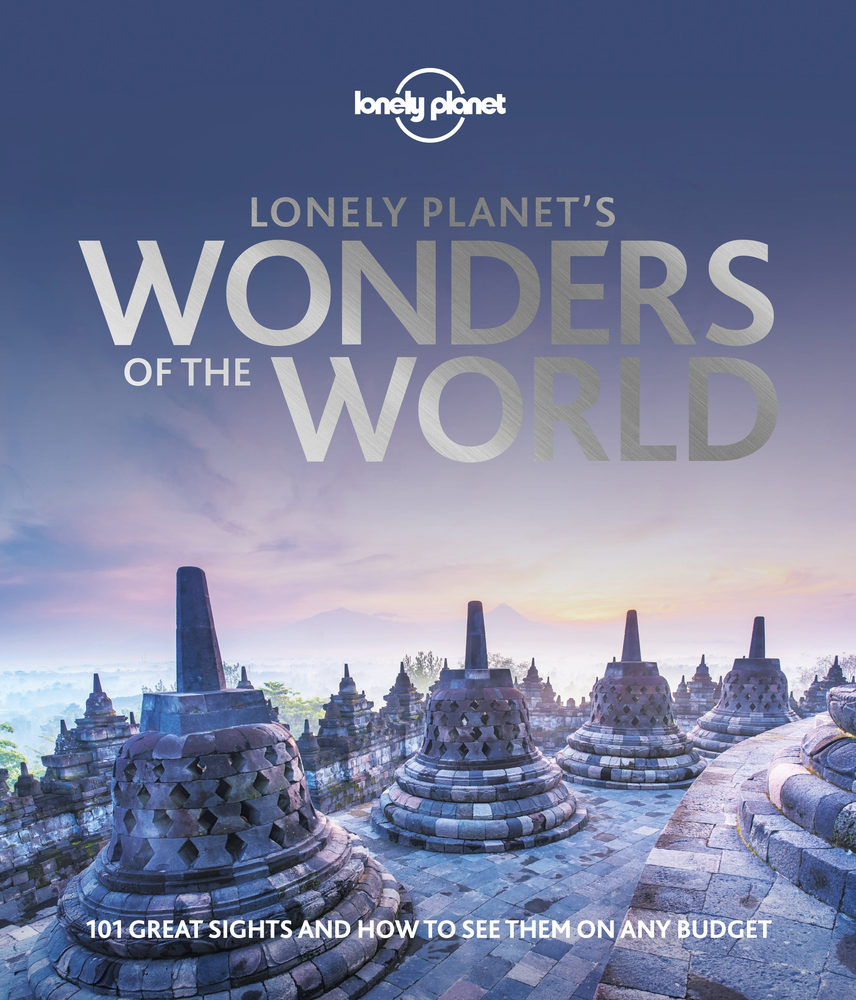

📖《世界奇观》是孤独星球出品的图文巨著，收录了全球最壮观的自然与人文景观。从马丘比丘到吴哥窟，从大堡礁到北极光，每一个奇观都有精美的摄影作品和深度介绍。
这本书不仅是一份旅行清单，更是一场纸上环游世界之旅。
这本书的照片很好看！
翻开这本书，就被里面的摄影作品震撼到了。孤独星球的摄影师们捕捉到了世界上最壮观的瞬间：日出时的泰姬陵、晨雾中的马丘比丘、极光下的冰原。每一张照片都是艺术品，值得反复欣赏。
书中的文字也很有深度，不仅介绍了每个奇观的历史背景和地理知识，还提供了实用的旅行建议。看完这本书，仿佛完成了一次环球旅行，也种下了很多"有生之年"的梦想种子。虽然不是每个地方都能亲自到达，但通过这本书，至少可以饱览这些人间奇迹。对于热爱旅行和摄影的人来说，这是一本值得收藏的床头书。